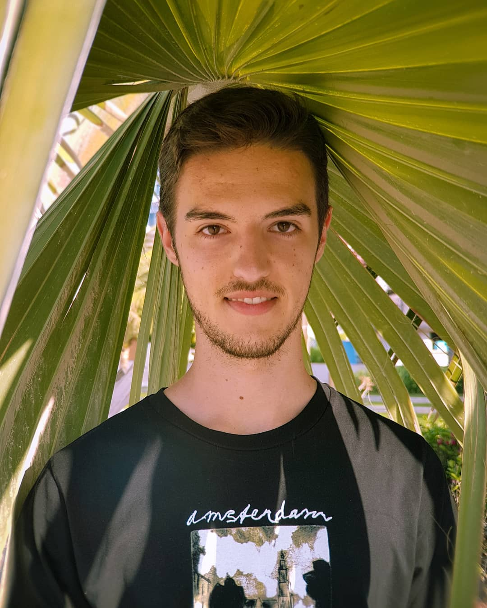

Alessio Buraggina

About me
Hi, I'm Alessio, a Computer Science major studying at
the University of Miami (class of 2020). Find more about me below!
Education
University of Miami, Miami FL -- May 2020
Bachelor of Science in Computer Science
Minor in Mathematics
Experience
Engineering Practicum Intern, Google, Sunnyvale CA
May 2018 - August 2018
- Co-authored security enhancements to gRPC, an open-source,
cross-platform RPC framework
- Enabled gRPC ot automatically fetch trusted root certificates
during application launch instead of
relying on a hard-coded
set of cetificates
- Implementation in C/C++, platform-specific implementation focused
on Linux
Research Assistant, Carnegie Mellon University, Pittsburgh PA
May 2017 - August 2017
- Conducted study on "Mobile sites tracking behavior" as part of the
Carnegie Mellon REUSE program
- Developed Chrome extension to record API calls by websites, which
could then be injected via MITMproxy
to monitor websites on
mobile platforms as well
Here are some of my hobbies:
- Basketball
- Photography (check out my
instagram
profile)
- Drone filmmaking
A list of CSC courses I have taken:
| Course name |
Semester |
| Computer Programming I (CSC120) |
Fall 2016 |
| Intro to Cybersecurity (CSC200) |
Spring 2017 |
| Computer Programming II (CSC220) |
Spring 2017 |
| Computer Architecture (CSC314) |
Fall 2017 |
| Data Structures & Algorithms (CSC317) |
Spring 2018 |
| System Programming (CSC322) |
Fall 2018 |
| Operating Systems (CSC421) |
Fall 2018 |
Linkedin
University of Miami
1320 S Dixie Hwy, Coral Gables, FL 33146